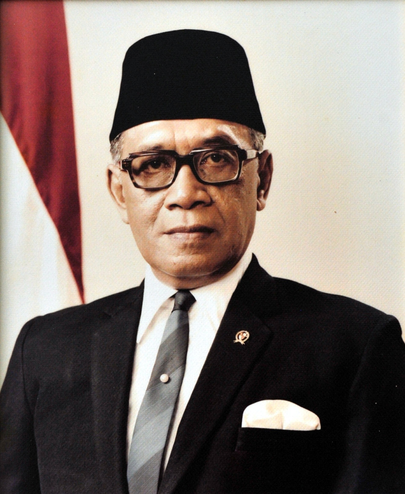

Ingkang Sinuwun Sri Sultan
Hamengkubawono IX
| Lahir | : | 12 April 1912 |
| Meninggal | : | 2 Oktober 1988 (umur 76) |
| Tanda tangan | : |  |
Hamengkubawono IX (1912-1988) adalah seorang tokoh penting dalam sejarah Indonesia yang juga dikenal sebagai Sri Sultan Hamengkubawono IX, yang memerintah di wilayah Kesultanan Yogyakarta sejak tahun 1940 hingga 1988. Ia memiliki peran ganda sebagai penguasa tradisional dan pejabat pemerintah Indonesia. Hamengkubawono IX adalah salah satu tokoh yang berperan aktif dalam perjuangan kemerdekaan Indonesia melawan penjajahan Belanda. Setelah kemerdekaan, ia terus berkontribusi dalam pembentukan dan konsolidasi negara Indonesia, termasuk dalam pembentukan Konstitusi Indonesia. Selain itu, ia juga menjabat sebagai Wakil Presiden Indonesia pada tahun 1973 hingga 1978. Hamengkubawono IX dihormati karena kepemimpinan dan dedikasinya dalam memperjuangkan kepentingan rakyat Jawa dan Indonesia serta pelestarian budaya Jawa.
Kehidupan Saat Masa Orde Baru
Pada masa Orde Baru, Hamengkubawono IX, selaku Sri Sultan Yogyakarta, memainkan peran penting dalam membantu proyek pembangunan nasional di Indonesia. Beliau mendukung program-program pembangunan pemerintah Orde Baru, yang mencakup proyek-proyek infrastruktur, pertanian, pendidikan, dan ekonomi. Salah satu contohnya adalah dukungannya terhadap proyek pembangunan jalan, pelabuhan, dan proyek-proyek pertanian di wilayah Yogyakarta. Kontribusi finansial dari Kesultanan Yogyakarta, bersama dengan dukungan tenaga kerja dan sumber daya lokal lainnya, membantu mempercepat pembangunan nasional di bawah pemerintahan Soeharto. Meskipun ini mencerminkan upaya kerjasama antara pemerintah pusat dan pemerintah daerah, beberapa pihak juga mengkritiknya karena dianggap sebagai bagian dari pendekatan otoriter pemerintah Orde Baru dalam mengelola wilayah-wilayah daerah.
Selain membantu proyek pembangunan nasional, Hamengkubawono IX juga memainkan peran lain yang penting dalam konteks Orde Baru. Beliau merupakan figur simbolik yang merujuk pada legitimasi keraton Jawa dan budaya tradisional dalam sistem politik modern Indonesia. Dalam perannya sebagai pemimpin tradisional, Sri Sultan juga terlibat dalam upaya pelestarian budaya Jawa, termasuk seni pertunjukan, bahasa, dan adat istiadat. Ini membantu menjaga warisan budaya Jawa dalam menghadapi modernisasi dan globalisasi. Selain itu, Hamengkubawono IX juga berfungsi sebagai pihak mediator dan penengah dalam sejumlah konflik di wilayahnya, yang mencerminkan peran keraton Yogyakarta sebagai pilar stabilitas sosial dan politik di Jawa Tengah. Namun, perannya juga sering kali terjalin dalam dinamika politik yang lebih besar di Indonesia, di mana pemerintah Orde Baru sering menggunakan dukungan keraton sebagai alat untuk memperkuat pengaruhnya.